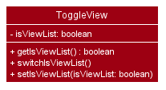

Overview
ExpenseLa is a desktop expense tracking application. The user works with a Command Line Interface (CLI), and enjoys a Graphical User Interface(GUI) created using JavaFX. It is written in Java for an NUS module CS2103/CS2103T Software Engineering.
Summary of contributions
This section provides a summary of the various contributions I have made to ExpenseLa.
Code contributed
You can follow these links to view a sample of my code:
[Commits] [Pull requests] [RepoSense Dashboard]
Enhancements implemented
-
Major enhancement: Created bar chart of the expenditures
-
What it does: Allows the user analyse his expenditure using bar chart.
-
Justification: Viewing just a list of transactions does not provide much information of his expenditure, especially if there are many transactions. Viewing it as a bar chart will allow him to analyse his expenditures better.
-
Highlights: Different kinds of bar chart can be showed depending on the filter set on the transactions. When filter is of a certain month, a stacked bar chart with days of the week as the x-axis is formed, with different weeks stacked on top of each other in ascending order. While there is no filter, a bar chart with month as the x-axis is formed, with total expenditures of current year and previous year each shown. Which has to reference many things from
Modelmaking it not easy to implement.
-
-
Major enhancement: Added the ability to toggle view between list of transactions and chart analysis
-
What it does: The
toggleviewcommand allows the user to switch between viewing the list of transactions and chart analysis(as said above) containing the bar chart and a pie chart. -
Justification: The user gets to view more things given the limited space the app has. This prevents compromising the amount of space given to viewing the list of transactions or the chart analysis.
-
Highlights: The
toggleviewwas implemented as a separate class residing inModelManagerfor better extendability next time to toggle view between more features.
-
-
Minor enhancement: Added an export command that allows the user to export the filtered transactions into a csv file.
-
Justification: The user can use the data to do his own analysis of his earnings and expenditure, and in a csv file format it is organized as well as allows the user to easily use excel functions for his analysis.
-
-
Minor enhancement: Added percentage to be shown for on pie chart created by my teammate (Pie chart of total expenditure separated by categories).
-
Justification: A pie chart for expenditure is to show the relative amount spent on each category relative to the total expenditure. Without percentage shown it can be quite hard to tell the relative amount.
-
Highlights: The pie chart library in Java does not support showing percentage, so I had to research how Java’s pie chart stores the values, and use that to figure out how to calculate the percentage and concat it into the pie chart, which was not easy to implement.
-
Contributions to the User Guide
Given below are sections I contributed to the User Guide. They showcase my ability to write documentation targeting end-users. |
Analysis of transactions : toggleview (Choi Min Suk + Pang Kim Jin)
Toggle between viewing list of transactions and analytics with bar graph and pie chart to show expense trend.
If filter is set to a specific month, the bar graph displays the transactions by day of the week. If filter is set to all months, bar chart will display transactions by month for current and previous year. The pie chart will show the transactions by the different categories according to the filter.
Expected Outcome: changed view to charts if previously was list view and to list view if previously was chart view.
ToggleView and BarChart by Choi Min Suk and PieChart by Pang Kim Jin
|
Export transaction data to csv : export (Choi Min Suk)
Export the filtered transaction list to a csv file
Expected Outcome: A csv file will be created at the root directory and all transactions currently visible in the app will be exported to the csv file.

Contributions to the Developer Guide
Given below are sections I contributed to the Developer Guide. They showcase my ability to write technical documentation and the technical depth of my contributions to the project. |
UI component (Choi Min Suk)

API : Ui.java
The UI consists of a MainWindow that is made up of parts e.g.CommandBox, ResultDisplay, TransactionListPanel, StatusBarFooter etc. All these, including the MainWindow, inherit from the abstract UiPart class.
The UI component uses JavaFx UI framework. The layout of these UI parts are defined in matching .fxml files that are in the src/main/resources/view folder. For example, the layout of the MainWindow is specified in MainWindow.fxml
The UI component does the following actions:
-
Executes user commands using the
Logiccomponent. -
Listens for changes to
Modeldata so that the UI can be updated with the modified data.
Chart Analytics (toggleview Command and Bar Graphs by Choi Min Suk + Pie Chart by Pang Kim Jin)
The toggleview command allows the user to switch between viewing the list of 'Transactions' and viewing an analysis of his expenditure.
In the expenditure analysis view we have a bar chart to show expenditure breakdown by date as well as a pie chart to show expenditure breakdown by category.
Implementation
MainWindow decides whether to show a list of transactions or chart analysis based on ToggleView#isViewList, by accessing
Logic#getToggleView().
Here is a Class Diagram for the implementation of ToggleView:

The ToggleView mechanism utilizes Logic operations with the ToggleViewCommand class in place of Command. The following
methods are concrete implementations for the toggle operation:
-
ToggleViewCommand#execute()- Modifies theToggleViewinModelto view list of transactions or view analytics, and returns aCommandResult(Step 4 of Logic). -
ToggleView#switchIsViewList()- Modifies the boolean valueisViewListinToggleViewto the negation of it’s current value.-
This
ToggleViewis wrapped inExpenseLaand itsswitchIsViewList()is called throughExpenseLa#switchToggleView(). -
ExpenseLa#switchToggleView()is exposed in theModelinterface asModel#switchToggleView().
-
The following sequence diagram illustrates toggleview command execution:
Example of usage
Given next is an example and explanation of how the ToggleView mechanism behaves at each step:
Step 1. The user starts up the application with an initial list loaded from external storage file. The diagram here depicts the example list used throughout this scenario.

Step 2. The user inputs toggleview to change the view from list of transactions to chart analysis.
Step 3. ToggleViewCommand#execute() switches isViewList of ToggleView from true to false.

Step 4. MainWindow#executeCommand() checks the boolean value of isViewList in ToggleView, which is false,
and displays chart analysis.

Step 5. User inputs toggleview again to change view back to list of transactions.

Step 6. User can set filter to a certain month to view a different kind of bar chart.
The following code snippet from MainWindow#executeCommand() checking of the boolean value of isViewList in ToggleView,
and deciding whether to show a list of transactions of chart analysis, and what bar graph to show:
// The if else statement checks the value of isViewList from ToggleView
if (logic.getToggleView().getIsViewList()) {
// Creates ui for list of transactions
transactionListPanel = new TransactionListPanel(logic.getFilteredTransactionList());
transactionListAndChartAnalyticsPanelPlaceholder.getChildren().add(transactionListPanel.getRoot());
} else {
// Creates ui for chart analysis
// Calls logic.getIsFilterMonth() to check if the filter is set to a specific month or not, to decide which bar graph to build
chartAnalyticsPanel = new ChartAnalyticsPanel(logic.getFilteredTransactionList(), logic.getIsFilterMonth());
transactionListAndChartAnalyticsPanelPlaceholder.getChildren().add(chartAnalyticsPanel.getRoot());
}Execution shown to user
The following activity diagram gives an overview of what ExpenseLa shows the user when executing toggleview command:

Design considerations
This section shows some of the design considerations taken when implementing the undo and redo features.
Aspect: Design used to implement toggelview feature
-
Alternative 1 (current choice): Create a ToggleView Class to keep a boolean value of isViewList to keep track of showing list of transactions or chart analysis.
-
Pros: Easily extendable next time to accommodate more different kind of views by changing boolean to possibly enum.
-
Pros: Easy to implement functions to change values in
ToggleViewobject, which allows easy extendability next time also. -
Cons: Needs to implement many functions through
LogicandModel.
-
-
Alternative 2: Create a boolean value in
Modelto track whether to show list of transactions or chart analysis.-
Pros: Easy implementation and checking of boolean value by
MainWindowto check which view to show. -
Cons: Not extendable next time when trying to accommodate different kind of views.
-
Alternative 1 was chosen because it is easily extendable, in case we want to improve or develop on the feature in the future. It also follows better OOP principles, making the code much neater and understandable.
Export (Choi Min Suk)
The export command allows user to export currently filtered transactions to a csv file, in case he would like to use the data for his own analysis.
Implementation
ExportCommand is instantiated by ExpenseLaParser#parseCommand(String userInput), which attempts to split the userInput
into the command word and its parameters. Since ExportCommand does not require any arguments, it is instantiated directly.
ExportCommand obtains the filtered list of transaction to export using Model#getFilteredTransactionList(), which then
attempts to create a csv file in the current directory using the attributes of each transaction.
The sequence diagram below shows how the execution of export is like:
The following conditions will cause a CommandException to be thrown by the command:
-
Empty filtered transaction list
-
Failure in creating the file
-
Failure in writing to the file (Possibly due to the directory changing while the command is being executed)
The image below shows how the csv file looks when user executes export command successfully:

Proposed extension
In the near future, we plan to enhance the export feature. We want to improve the export command to take in view as a possible argument, thus allowing the user to choose between exporting list of transactions or the chart analysis. The user can use the chart analysis generated for visual presentations, especially if the expense tracker is for a business.
The image below shows how a possible future implementation of this feature could look like:

User Stories
Priorities: High (must have) - * * *, Medium (nice to have) - * *, Low (unlikely to have) - *
| Priority | As a … | I want to … | So that I can… |
|---|---|---|---|
|
new user |
see usage instructions |
refer to instructions when I forget how to use the App |
|
general user |
add a new expense entry |
keep track of my expenses |
|
employed user |
add a new income entry |
keep track of my income |
|
high-income user |
keep track of all the money I earn |
make decisions on where my most lucrative source of income is |
|
low-income user (like student) |
set budget for current month |
limit my expenditure for the month |
|
low-income user (like student) |
be notified by the application if i am spending too much money |
be wary of overshooting my budget |
|
consistent thrifty user |
set budget for every month(recurrent budget) once |
have no need to constant;y set my unchanging budget |
|
part-time worker with varying income |
be flexible with my budgets |
spend more or less on certain months depending on my financial situation |
|
visual user |
be visually alerted when I spend a certain proportion of my budget |
adjust my spending habit for the rest of the month |
|
careless user |
delete an expense or income entry |
remove entries that I added in by mistake |
|
forgetful user |
find an entry by keyword |
check if I spent money on a particular thing |
|
spendthrift user |
filter expense based on category |
know if I generally spend a lot of money or only on certain months |
|
forward-looking user |
look at my spending trend by week or month |
keep track of my income |
|
couple/student trying to save up |
filter expense based on date or time period |
see how much money I have spent in that time period and make better decisions |
|
couple/student trying to save up |
view amount of budget left to spend |
adjust spending habit for the rest of the month |
|
general user |
view total money I have |
be able to tell how much I can spend |
|
user trying to save money |
view total expense for a particular month |
decide on my future expenditures |
|
visually analytical user |
view pie chart of money spent based on category |
see where I spend the most money on |
|
visually analytical user |
view bar chart of money spent based on time period |
see when I spend the most money |
|
organized user |
organize my expenditure into different categories |
better able to track where I am spending my money |
|
not one-off user |
all my expenditures and income to be saved |
continue on from previous whenever I exit and launch back the application |
|
smart analytical user |
export my expenditure and income |
use the data to make my own analysis |
|
secretive user |
set a password to login tp the application |
prevent unwanted users from viewing my expenses |
|
businessman |
have multiple accounts |
manage my expenses not only for myself but my business |
|
parent |
have multiple accounts |
help manage my children’s expenses |
|
user with many friends |
add friends in the application |
|
help each other in their savings |
|
concerned friend |
look at my friend’s spending habit |
keep a lookout for their expenditure |
|
user who owes people money |
view the people who I owe money to |
keep track of who I owe |
|
user who lends people money |
request payment from people who owe me money |
keep track of my loans |
|
sociable user |
indicate when my expenditure is within the budget |
share the achievement with my friends |
|
lazy user |
have the application make recommendations on my spending habits |
Effort
In this section, we highlight the amount of effort taken for us to develop ExpenseLa, the challenges faced in this development and our eventual achievement.
Effort by team
Our application, ExpenseLa, is considerably different from what Address Book 3 (AB3) had implemented. We wanted to take some address book features that were available in AB3, but wanted to build an expense tracker for our project. As such, to build ExpenseLa, we took and modified some features previously available in AB3, but had to create many of our own models and implementations for the new features.
In short, AB3 stores details related to multiple people known to the user. ExpenseLa stores data related to multiple transactions by the user and so much more. ExpenseLa uses that data to track the monthly expenditure, income as well as budget, analyses their expenditure by graphing it out, and provide many other features like filtering transactions as well as new ways of adding transactions to make the application easier to use.
While building ExpenseLa, we spent a considerable amount of time not just implementing our features, but also making sure that new features were linked to ExpenseLa and could cohesively work with other features to make sure the application provided and smooth and consistent user experience. All these discussions were held at least once a week with a minimum 2 hours each round to provide feedback for each other’s implementations and that our implementations could work together.
Challenges faced
The team encountered some challenges while developing ExpenseLa. The most notable ones are:
-
Initial brainstorming of ideas
At the start of the project, we wanted to do a meeting scheduler for NUS computing students. However after multiple discussions, we deemed it unfit to implement as there were too many components to think about and difficult to implement given our limited time to complete the application. Thus we decided to make an expense tracker instead. We had many different ideas for our expense tracker and ways to implement them. We needed a few meetings to discuss and iron out our direction for the project to ensure everyone was on the same page before starting the development process. -
Storage
We needed a way to store our data so when the application starts we can load previously stored transactions and other data. We decided to adopt and modify slightly AB3’s storage system and implement it in ExpenseLa. -
Commands
An expense tracker requires many different commands to carry out many different actions, especially since it uses command line interface. We adapted AB3’s parser. For similar commands to AB3 like add, we had to change the command to accept different predicates, thus parsing it differently. We also had to think about how to parse new commands, such as filter function and parsing recurring budget and transactions to be stored as Global data (talked about below), which was a big change from AB3. -
Global data
We set ExpenseLa to be timeframe specific, with Monthly Data such as budget, income and expenditure for the month to reset at the beginning of every month. However we also had some data that were not timeframe specific, such as transactions and budget that were set to be recurring every month. We could not store and reference it the same way as how the normal transactions were referenced from the json data. After discussion, we decided to create aGlobalDataclass inModelManagerwhere it will be referenced separately fromExpenseLa. -
User interface
We decided to keep a ExpenseLa’s UI generally similar to AB3, but with addition of new UI features. We created a new placeholder forMonthly Datafor easy constant viewing by the user. We created a chart analysis for the expenditures, which was in the form of a bar chart and pie chart. The charts took up a considerable amount of space, and putting a separate placeholder for it would be unfeasible for small screens. Thus we implemented atoggleviewcommand which allows the user to toggle between viewing the list of transactions and the chart analytics. This required us to learn both the chart libraries as well as think about how we were going to change the views, while updating the charts when new commands were added.
Conclusion
From planning to documentation to coding of the project, the team believes that every member has put in equal and huge amount of effort on all parts of the project. We believe that
our product is significantly different from AB3, with many new features which were carefully planned in implementation, and we are proud of ExpenseLa we have built.